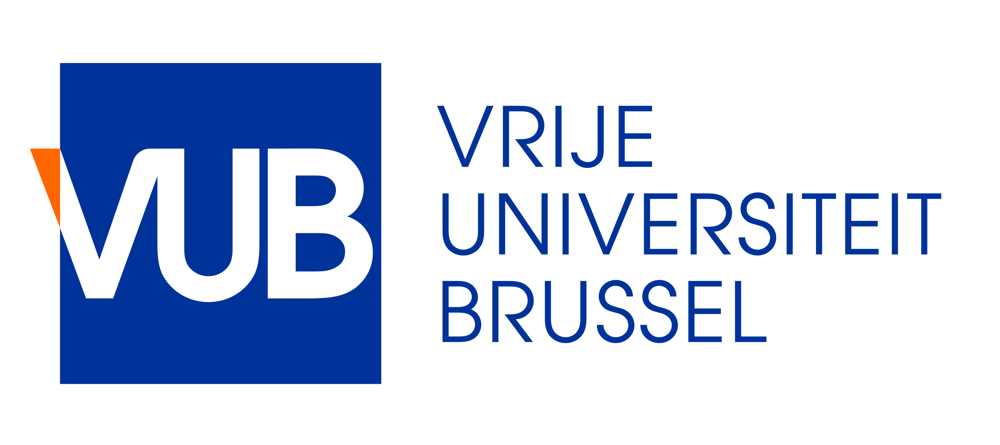
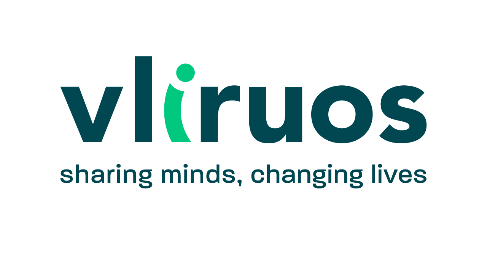
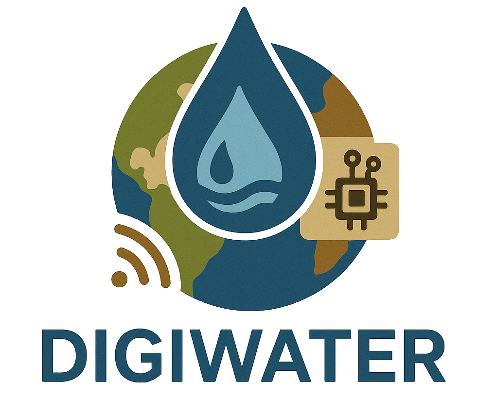
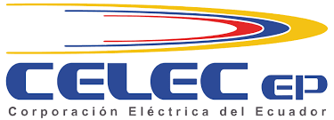
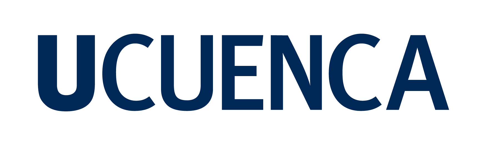
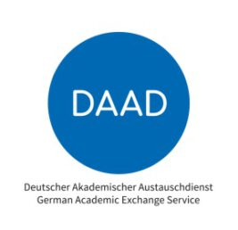

All projects


NbS-WISE — Nature-Based Solutions for Water Innovation, Sustainability, and Ecosystems
NBsWISE enhances Nature-Based Solutions for hydroclimatic risk management through education, research, digital tools, and stakeholder engagement. It integrates IoT sensors, AI models, and GIS tools to improve NbS monitoring. The project trains students, researchers, and policymakers, engages citizens in NbS monitoring, and fosters policy integration. Expected outcomes include digital learning resources, real-world case studies, and high-level stakeholder events.
→ Project website
→ Project website

AWARE — Empowering communities for resilient water management: A collaborative approach to hydroclimatic challenges in the Andes

DIGIWATER — Building Resilient Water Futures in the Global South through Digital Tools and Citizen Engagement
A strategic initiative led by VUB to catalyse long-term academic and institutional change in the Global South by strengthening collaboration with partners from Bolivia, Chile, Cuba, Ecuador, Peru, and South Africa in the field of water resilience. The long-term vision is to create an open, inclusive, and well-coordinated ecosystem where universities across Latin America, Africa, and Europe co-develop knowledge, apply digital tools, and engage in sustained collaboration on research and training for sustainable water governance.
→ Project website
→ Project website


Data fusion of near-real-time satellite products for improving runoff forecasting
Integration of satellite precipitation and AI models for operational flood forecasting.

Deutscher Akademischer Austauschdienst — Study trips for groups of foreign students in Germany
15 students from the Master's program in Hydrology (Ecuador) traveled to Giessen University and Marburg University to present their research, learn from German universities, and engage in cultural immersion.